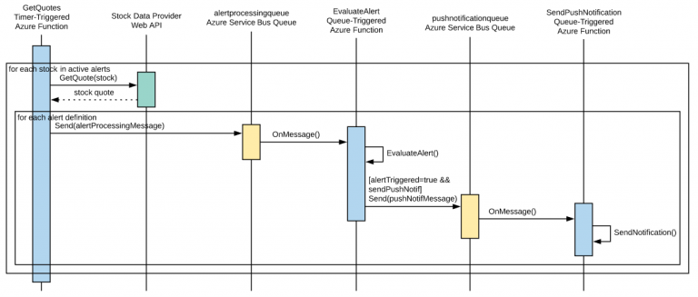
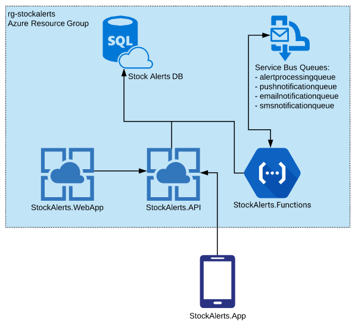
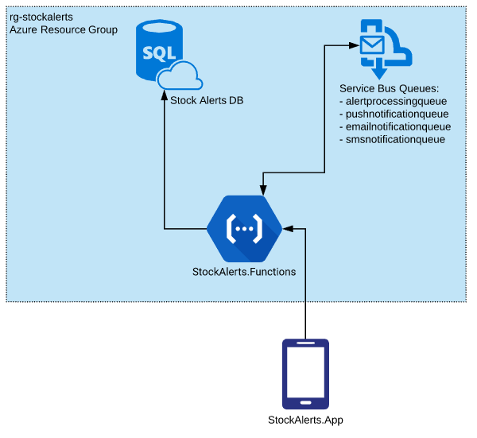

Stock Alerts Infrastructure
We’ve talked about the features that we’ll be implementing in Stock Alerts. Today we’ll look at the infrastructure that will be needed to support those features.
I’ve been working in Azure for several years now, both in my work life and on side projects. Being a primarily .NET developer, it makes sense that Azure is my preferred cloud. One of these days I will probably check out AWS, but for this project we’ll be hosting our backend services in Azure.
More Than Just CRUD
When deciding what to build for this project, I wanted to do something that was a bit more than just a simple CRUD app that consists of an app talking to a web service talking to a database. Stock Alerts will need to continuously monitor the current prices of all stocks for which there are active alert definitions and evaluate whether the alert should be triggered, so we’ll need a process that runs on a regular basis to perform that work. Further, when the process detects that an alert should be triggered, it needs to send out notifications on the user’s preferred channel(s).
For this processing, we’ll use a combination of Azure Functions and Service Bus queues.
Here’s a sequence diagram depicting the retrieving of quotes, evaluation of alert definitions, and sending of notifications:

ALERT DEFINITION EVALUATION
The evaluation of the active alert definitions will have a predictable load. The system will query the stock data provider on a defined time interval for the distinct set of stocks for which there are active alerts and iterate through the alert definitions and evaluate them against the latest data received from the data provider for that stock.
A timer-triggered Azure Function, which is essentially a CRON job running in Azure, will work nicely for periodically pulling new stock data. Initially, there will be a single function instance to pull the data, but this work can be partitioned out to multiple function instances if/when the need arises. It will then enqueue a message on a service bus queue (alertprocessingqueue) for each active alert indicating that there’s new data and the alert needs to be evaluated.
A service bus queue-triggered function (EvaluateAlert) will receive the service bus message and perform the evaluation for a single alert definition.
SENDING NOTIFICATIONS
The actual notification of users, on the other hand, will likely be characterized by periods of low activity with occasional spikes of high activity. Imagine a very popular stock like AAPL receiving an earnings surprise and opening 5% higher – several alert definitions could be triggered at once and notifications will need to be sent immediately.
Azure Functions will help us with this use case as well – we’ll enqueue notification messages on service bus queues (pushnotificationqueue, for example) when alerts are triggered and service bus queue-triggered functions (SendPushNotification, for example) will respond and send out the notifications. We’ll have a queue for each delivery channel (push, e-mail, SMS), and a function for each as well.
When AAPL spikes and 500 alerts are triggered, 500 messages will be enqueued on service bus queues (assuming each user only has one delivery channel) and 500 functions will be invoked to deliver those notifications.
The Infrastructure
So what Azure resources will be required to support the Stock Alerts features? Here’s a diagram of what we’ll need for the MVP:

We’ve got an Azure SQL database to store our users and their preferences, alert definitions and criteria, and stocks and their latest data.
We’ve already talked about the service bus queues, which are used for communicating between the Azure Functions, and we’ve already talked about the Azure Functions as well.
The Stock Alerts API will be an ASP.NET Core Web API service running in Azure, and it will expose endpoints to handle the user and alert definition maintenance as well as authentication.
The Stock Alerts web app, though depicted on the diagram, will actually be implemented post-MVP.
CURRENT STATE
The above shows the infrastructure as I plan to have it at launch. Below is the current infrastructure I have deployed in Azure:

All of the API endpoints are currently implemented as HTTP-triggered Azure functions. I did this because I already had the StockAlerts.Functions project, and I didn’t think there’d be that many HTTP endpoints. As I started implementing the authentication endpoints and I ran into some of the limitations of Azure Functions HTTP endpoints (i.e., you can’t inject logic into the pipeline as you can into the ASP.NET Core middleware for a full-fledged Web API), I increasingly felt like the API endpoints deserved their own project and app service. It’s on my TODO list to move these into their own project and service.
Wrapping Up
I think the most interesting part of the Stock Alerts infrastructure is the use of Azure Functions and Service Bus queues to evaluate alert definitions and send notifications. Azure Functions make sense for these processes because they can be triggered by schedule or service bus queue message (among other methods), and they are easily scaled. Service bus queues are appropriate for the communication between functions because they are highly available, reliable, and fast.
Though one of the key value props of serverless computing is automatic scaling, I don’t have practical experience with scaling Azure Functions during periods of high load. I’ll log and monitor timings from the various functions to ensure that notifications are being delivered in a timely fashion from when they are triggered, which is crucial for Stock Alerts’ primary function.
That’s all for now. Thanks for reading.
-Jon